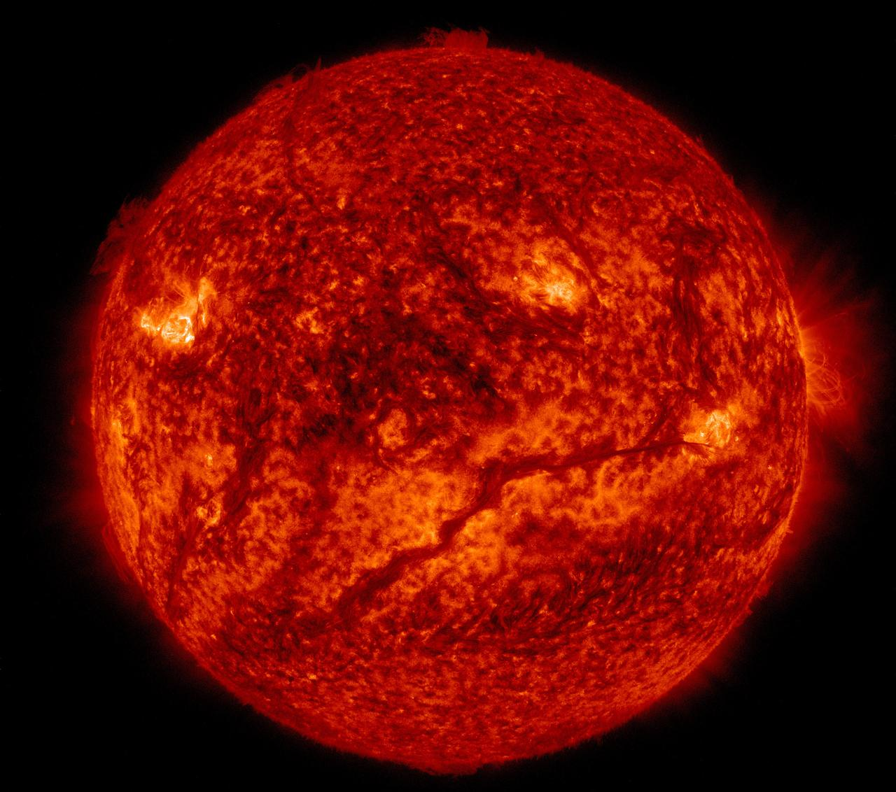

Sun
The Sun is a star about 4.6 billion years old. It holds 99.8% of the solar system's mass, and its gravity keeps every planet in orbit. Its light takes about 8 minutes to reach Earth.
Diameter 1.39 million km | Surface 5,500 C | Core 15 million C
False-color image from NASA/SDO, colored to show solar features.